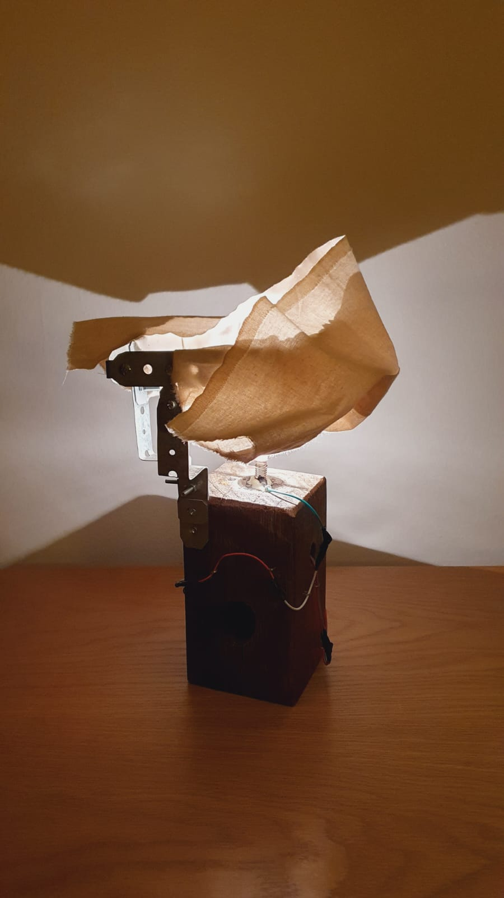

Ceramics
Bradley has been working in Clay for over 10 years which has produced a strong attraction towards its materiality. This has culminated in the formulation his own recipes by mixing multiple types of clays in order to bring about a desired colour and texture for which he is known. With a long background in sculpture, Bradley takes careful time in sculpting the foot of each bowl to its own unique pattern, imbuing it with an expression of material personality.


Stoneware, 2024, Shot by Otis Burian Hodge


Stoneware, Gas Fired, 2024
Wind Chimes
Wind Chime, 2024, Stoneware, String
Wind Chime, 2024, Stoneware, String, Swivel
Wind Chime, 2024, Stoneware, String, Brass
Wind Chime, 2024, Stoneware, String, Calico
Wind Chime, 2024, Stoneware, String, Calico
Wind Chime, 2024, Stoneware, String
Nic's Windchime, Walnut, Hardware & Found Materials, 2023
Wood
With a passion for sculpting and knives, whittling has become an obvious favourite pastime for Bradley in recent years. While an admittedly slow worker, he happens makes just enough spoons for friends birthdays each year. Here are some of these spoons.
Becky's Spoon, 2024, Huon Pine
Perry's Ladle, 2024, Walnut
Finger Spoon. 2024, Banksia
Light
Bradley’s lamp-making practice has evolved from his work with the delicate nature of wind chimes, and the attention to room lighting that has been born from his involvement with General Merchant.
Kitchen Lamp, 2024, Walnut, Hardware, Aesop bag


Doorswing Table, 2024, Marine Ply, calico, hardware
Doorswing Table is a three dimensional work to be viewed in a low light room and
permanently installed in the artists bedroom. The main structure of this work has been cut
out of Marine ply-wood. Its unusual triangular shape has been made to fit flush behind the
open door of the artist’s bedroom.
This work draws attention back to the space through its abstract form, prompting the
audience to consider unused spaces in their own life and how they might be able to bring
beauty to areas that seem to simply take up space. The illuminated aspect of this work
additionally attempts to bring focus and function to this space that is usually devoid of
purpose. In this object, its lightbulbs have been moved to the interior, providing the object
with a secrecy that the audience is not privy to. Additionally, this light is obscured behind
it’s curtains in order to hide the contents of the object. This transforms the object not
simply from a place that should now be looked at and seen, but also to a place that
contains something important and exclusive. All of these features have been implemented
in order to allude to the fact that there is beauty and reverence, especially within the
unseen and often cast aside places of our lives.

Astrid's Lamp, 2023, Hardware, Bed Leg, Calico
General Merchant
General Merchant is a Eora/Sydney based music and events organisation. Involvement in this group included building, installation and de-installation of lighting fixtures and event structures. Organising both private events and commissioned installations, General Merchant has maintained a large attention to detail, ensuring a great experience for lighting admirers and dance floor enthusiasts.


General Merchant Installation at Woodburnia 2025
General Merchant hosting IDMT, live at Mothership Studios, 2024
Words
Writing is a crucial aspectg of both my thinking and making. Whether expoanding avenues of practice or sharing and reifying ideas, there is often no better way than to write them down.